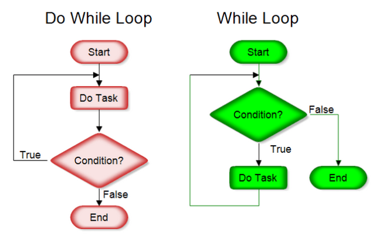

// ejercicio.js
/*crea funcion que toma 4 argumentos, suma los 2 primeros y multiplica los 2 siguientes
Si el número creado es mayor que 50, la consola registra "¡El número es mayor que 50!".
Si es más pequeño, la consola registra "¡El número es menor que 50!"
*/
function myFunctionSumaMultiplica(num1, num2,num3,num4) {
// Verificar que se hayan pasado exactamente 4 argumentos
if (arguments.length !== 4) {
console.log("Error de cantidad: se deben pasar 4 argumentos.");
return;
}
// Verificar que todos sean números
if (
typeof num1 !== 'number' ||
typeof num2 !== 'number' ||
typeof num3 !== 'number' ||
typeof num4 !== 'number'
) {
console.log("Error de tipo: todos los 4 argumentos deben ser números.");
return;
}
let suma1 = num1 + num2;
let suma2 = num3 + num4;
let producto = suma1 * suma2;
if (producto > 50) {
console.log(`¡El número ${producto} es mayor que 50!`);
}
else if (producto === 50) {
console.log(`¡El número ${producto} es igual a 50!`);
}
else {
console.log(`¡El número ${producto} es menor que 50!`);
}
}
//llama a la funcion y muestra el resultado en consola
//var resultado = myFunctionSumaMultiplica(2.5, 3, 4, 2);
// ejemplo con error de tipo
//var resultado2 = myFunctionSumaMultiplica(2.5, 3, "4", 2);
// ejemplo con error de cantidad de argumentos
//var resultado3 = myFunctionSumaMultiplica(2.5, 3, 4);JS - CKP8
Cuestionario - Javascript
¿Qué tipo de bucles hay en JS?

Los bucles son una manera de repetir un proceso. Los bucles más comunes son:
- For: itera sobre una secuencia de elementos, como un array o un objeto.
- While: repite proceso mientras se cumple una condición.Si no se cumple, no se corre el proceso ninguna vez.
- Do-While: similar al bucle While, pero se ejecuta al menos una vez antes de evaluar la condición.
Veamos ahora detalle de cada tipo de bucle y ejemplos de cada uno.
- Bucle For
El bucle for es el más común y se utiliza para ejecutar un bloque de código un número determinado de veces. La sintaxis básica es:
for (inicialización; condición; incremento) {
// código a ejecutar
}Donde:
inicialización: es la expresión que se ejecuta antes de comenzar el bucle. condición: es la expresión que se evalúa en cada iteración para determinar si el bucle debe continuar. incremento: es la expresión que se ejecuta al final de cada iteración para actualizar la variable de control.
Ejemplo:
for (let i = 0; i < 5; i++) {
console.log(i);
}
// Salida: 0, 1, 2, 3, 4- Bucle While
El bucle while se utiliza para ejecutar un bloque de código mientras se cumple una condición determinada. La sintaxis básica es:
while (condición) {
// código a ejecutar
}Donde condición es la expresión que se evalúa en cada iteración para determinar si el bucle debe continuar.
Ejemplo:
let i = 0;
while (i < 5) {
console.log(i);
i++;
}
// Salida: 0, 1, 2, 3, 4- Bucle Do-While
El bucle do-while es similar al bucle while, pero se ejecuta al menos una vez antes de evaluar la condición. La sintaxis básica es:
do {
// código a ejecutar
} while (condición);Donde condición es la expresión que se evalúa en cada iteración para determinar si el bucle debe continuar.
El bucle Do-While se ejecuta de la siguiente manera:
- Se ejecuta el código dentro del bloque do al menos una vez.
- Luego, se evalúa la condición en la cláusula while.
- Si la condición es true, se vuelve a ejecutar el código dentro del bloque do.
- Si la condición es false, el bucle termina.
Ejemplo:
let i = 0;
do {
console.log(i);
i++;
} while (i < 5);
// Salida: 0, 1, 2, 3, 4En este ejemplo, el bucle Do-While se ejecuta al menos una vez, imprimiendo el valor de i (0). Luego, se evalúa la condición i < 5, que es true, por lo que se vuelve a ejecutar el código dentro del bloque do, imprimiendo el valor de i (1). Esto continúa hasta que i sea 5, momento en el que la condición es false y el bucle termina.
La principal diferencia entre While y Do-While es que Do-While se ejecuta al menos una vez, mientras que While puede no ejecutarse nunca si la condición inicial es false.
Referencias
https://developer.mozilla.org/en-US/docs/Web/JavaScript/Guide/Loops_and_iteration
https://www.w3schools.com/jsref/jsref_dowhile.asp
https://www.linkedin.com/pulse/loop-while-dowhile-javascript-hadi-soufan/
¿Cuáles son las diferencias entre const, let y var?
En JavaScript, const, let y var se utilizan para declarar variables, pero tienen diferencias clave en su alcance y comportamiento (hoisting, reglas de reasignación):
Hoisting: Es un comportamiento donde las declaraciones de variables se mueven a la parte superior del ambito en el que se declaran.
var: La variable declarada con var tiene un alcance de función o global, es decir, se aplica a toda la función en la que se declara. Puede ser redeclarada y reasignada.
var persona = { nombre: "Ana", edad: 28 };
var persona = { nombre: "Fran", edad: 25 };Ejemplo de Hoisting para var donde se tiene:
console.log(x); // undefined
var x = 10;Debido al hoisting, el código se ejecuta como si fuera la variable declarada y no asignada hasta después:
var x;
console.log(x); // undefined
x = 10;let: La variable declarada con let tiene un alcance de bloque, es decir, se aplica solo dentro del bloque en el que se declara. Puede ser reasignada, pero no redeclarada.
En el siguiente ejemplo se observa como si se llama a una variable declarada dentro de función y se intenta llamar fuera del bloque nos da error:
if (true) {
let nombre = "Juan";
console.log(nombre);
}
console.log(nombre); // Error: nombre is not definedEn otro ejemplo se usa let para declarar una variable global y luego otra local (dentro de función):
let edad = 25;
if (true) {
let edad = 30;
console.log(edad); // 30
}
console.log(edad); // 25Se observa como la variable local solo es accesible dentro del bloque if y no afecta a la variable global.
Hoisting para let funciona diferente que para var, ya que que con let no se inicializa la variable y causa un error:
console.log(number)
// ReferenceError: Cannot access 'number' before initialization
let number = 50const: La variable declarada con const también tiene un alcance de bloque, pero no puede ser reasignada ni redeclarada. Su valor es constante.
const edad = 30;
edad = 35; // Error: Assignment to constant variable.Hoisting para const es similar que para let donde no se inicializa variable y da error:
console.log(number)
// ReferenceError: Cannot access 'number' before initialization
const number = 50Debido a que usar variables antes de declararlas puede causar problemas, algunas veces se recomienda seguir la regla no-use-before-define o lo que es definir primero y hasta después usar.
Referencias
https://www.geeksforgeeks.org/difference-between-var-let-and-const-keywords-in-javascript/
https://www.freecodecamp.org/news/differences-between-var-let-const-javascript/
¿Qué es una función de flecha?
Una función flecha es una forma concisa de definir una función en JavaScript. Se utiliza la sintaxis () => {} para crear una función anónima.
Ejemplo de una función normal (function declaration) que suma dos números:
function sumar(a, b) {
return a + b;
}La versión con función anónima:
var sumar = function(a, b) {
return a + b;
}Ahora miramos versión de función flecha equivalente:
const sumar = (a, b) => a + b;
console.log(sumar(2, 3)); // 5Variantes
Hay algunas variantes, por ejemplo los parentesis en los argumentos. En la función anterior usamos como argumentos (a,b) que nos regresa el resultado de expresión (a+b) pero en caso de que hubiera un solo argumento, los parentesis pueden ser omitidos. Por ejemplo en la siguiente expression la función puede ser escrita con o sin parentesis.
let double = n => n * 2;
// igual que: let double = (n) => n * 2;
// Muy similar a funcion anónima: let double = function(n) { return n * 2 }
alert( double(3) ); // 6En caso de que no hubiera argumentos, los parentesis tienen que estar vacios. Por ejemplo:
let saluda = () => alert("Hola");
saluda();Multilinea.En caso de que se tenga que realizar varias expresiones dentro de la función se usa “{}” para englobar la diferentes lineas y se debe incluir “return” para que nos regrese algo, justo como en función normal. Veamos un ejemplo donde se evalua que los valores pasados a función son positivos y luego calcula el área:
const calcularArea = (base, altura) => {
if (base <= 0 || altura <= 0) {
throw new Error("La base y la altura deben ser números positivos");
}
const area = base * altura;
return area;
}Cuándo usar funciones flecha
Se recomienda usar funciones flecha en los siguientes casos:
- Funciones cortas y simples: Cuando la función es muy simple y no requiere una gran cantidad de código, las funciones flecha son ideales.
- Callbacks: Las funciones flecha son útiles como callbacks, ya que son más concisas y fáciles de leer.
- Funciones anónimas: Las funciones flecha son una forma natural de crear funciones anónimas.
- Map, filter, reduce: Las funciones flecha son ideales para usar con métodos de arrays como map, filter y reduce.
Ejemplo de uso con map:
const numbers = [1, 2, 3, 4, 5];
const doubles = numbers.map((num) => num * 2);
console.log(doubles); // [2, 4, 6, 8, 10]Referencias
https://developer.mozilla.org/en-US/docs/Web/JavaScript/Reference/Functions/Arrow_functions
¿Qué es la deconstrucción de variables?
La deconstrucción de variables es una forma de asignar valores a variables a partir de un objeto o un array.
Se utiliza la sintaxis para objeto: { variable1, variable2, ... } = objeto
Se utiliza la sintaxis para array: [variable1, variable2, ...] = array.
La deconstrucción de variables es útil para simplificar el código y evitar la necesidad de acceder a las propiedades de un objeto o los elementos de un array mediante su índice o nombre.
Veamos como funciona con algunos ejemplos:
// Deconstrucción de objeto
const persona = { nombre: "Juan", edad: 30 };
const { nombre, edad } = persona;
console.log(nombre); // Output: "Juan"
console.log(edad); // Output: 30Y para un array tenemos:
// Deconstrucción de array
const frutas = ["manzana", "banana", "naranja"];
const [fruta1, fruta2, fruta3] = frutas;
console.log(fruta1); // Output: "manzana"
console.log(fruta2); // Output: "banana"
console.log(fruta3); // Output: "naranja"Valores predeterminados
A una variable se le puede asignar un valor predeterminado, en el caso de que el valor desempacado del arreglo sea undefined.
Veamos un ejemplo para objeto donde se desestructura el objeto persona y se asignan valores predeterminados a las variables nombre, edad y pais. Si el objeto persona no tiene una propiedad con el nombre correspondiente, se asigna el valor predeterminado.
const persona = { nombre: "Juan", edad: 30 };
const { nombre = "Desconocido", edad = 0, pais = "No especificado" } = persona;
console.log(nombre); // "Juan"
console.log(edad); // 30
console.log(pais); // "No especificado"Ahora veamos un ejemplo usando array donde se desestructura el array colores y se asignan valores predeterminados a las variables primero, segundo y tercero. Si el array colores no tiene suficientes elementos, se asignan los valores predeterminados a las variables restantes.
const colores = ["rojo", "azul"];
const [primero = "negro", segundo = "blanco", tercero = "gris"] = colores;
console.log(primero); // "rojo"
console.log(segundo); // "azul"
console.log(tercero); // "gris"Ignorar valores devueltos
Se puede ignorar los valores que no interesan para evitar crear variables que no se usan y hay varias opciones. Aqui unos ejemplos:
// ❌ Malo, asignación de variable inútil
const [ignore, keep] = ['ignore', 'keep']; // La variable "ignore" no se utiliza
// ✅ Bueno, espacio en blanco
const [, keep] = ['ignore', 'keep']; // Se ignora el primer valor
// ✅ Bueno, guion bajo
const [_ignore, keep] = ['ignore', 'keep']; // Se ignora el primer valor y se indica con "_"Referencias
https://developer.mozilla.org/en-US/docs/Web/JavaScript/Reference/Operators/Destructuring
https://www.w3schools.com/js/js_destructuring.asp
https://dmitripavlutin.com/javascript-object-destructuring/
https://www.samanthaming.com/tidbits/13-skip-values-in-destructuring/
¿Qué hace el operador de extensión en JS?
El operador de extensión o spread syntax(...) se utiliza para expandir un array o un objeto en una nueva estructura de datos. La sintaxis extendida permite a un elemento iterable tal como un arreglo o cadena ser expandido en lugares donde cero o más argumentos (para llamadas de función) o elementos (para Array literales) son esperados, o a un objeto ser expandido en lugares donde cero o más pares de valores clave (para literales Tipo Objeto) son esperados.
// Expansión de array
const numeros = [1, 2, 3];
const nuevosNumeros = [...numeros, 4, 5, 6];
console.log(nuevosNumeros); // Output: [1, 2, 3, 4, 5, 6]
// Expansión de objeto
const persona = { nombre: "Juan", edad: 30 };
const nuevaPersona = { ...persona, direccion: "Calle 123" };
console.log(nuevaPersona); // Output: { nombre: "Juan", edad: 30, direccion: "Calle 123" }El operador de extensión es útil para crear copias de arrays y objetos, y para combinar datos de diferentes fuentes.
Crear copias
En el contexto de crear copias, se utiliza para crear una copia superficial de un array o un objeto.
- Copiar arrays
Para copiar un array, puedes utilizar el operador de propagación de la siguiente manera:
const original = [1, 2, 3];
const copia = [...original];
console.log(copia); // [1, 2, 3]En este ejemplo, se crea una copia del array original utilizando el operador de propagación (…). La copia se almacena en la variable copia.
- Copiar objetos
De manera similar, puedes copiar un objeto utilizando el operador de propagación:
const original = { a: 1, b: 2 };
const copia = { ...original };
console.log(copia); // { a: 1, b: 2 }Si te preguntas que es una copia superficial aqui se explica. La copia creada con el operador de propagación se llama “copia superficial” (o “shallow copy” en inglés) porque solo copia los valores de las propiedades del objeto o los elementos del array de manera directa, sin copiar los objetos o arrays anidados.
En otras palabras, si el objeto o array original contiene referencias a otros objetos o arrays, la copia solo copiará las referencias, no los objetos o arrays en sí mismos. Esto significa que si se modifica el objeto o array original, la copia también se verá afectada, ya que ambos comparten las mismas referencias.
Aquí hay un ejemplo:
const original = {
a: 1,
b: [2, 3],
c: { d: 4 }
};
const copia = { ...original };
copia.b.push(5);
copia.c.d = 6;
console.log(original); // { a: 1, b: [2, 3, 5], c: { d: 6 } }
console.log(copia); // { a: 1, b: [2, 3, 5], c: { d: 6 } }En este ejemplo, el objeto original se ve afectada por las modificaciones realizadas en el objeto copia, ya que ambos comparten las mismas referencias a los arrays y objetos anidados.
Para crear una copia profunda (o “deep copy”) que no comparta referencias con el objeto original, se necesitan técnicas más avanzadas, como la recursividad o la utilización de bibliotecas como Lodash
Combinar datos
El operador de propagación (spread syntax) también se puede utilizar para combinar datos de diferentes fuentes en un nuevo array o objeto.
- Combinar arrays
Para combinar dos o más arrays, puedes utilizar el operador de propagación de la siguiente manera:
const array1 = [1, 2, 3];
const array2 = [4, 5, 6];
const combinado = [...array1, ...array2];
console.log(combinado); // [1, 2, 3, 4, 5, 6]En este ejemplo, se combinan los arrays array1 y array2 en un nuevo array llamado combinado.
- Combinar objetos
De manera similar, puedes combinar dos o más objetos utilizando el operador de propagación:
const objeto1 = { a: 1, b: 2 };
const objeto2 = { c: 3, d: 4 };
const combinado = {...objeto1, ...objeto2};
console.log(combinado); // { a: 1, b: 2, c: 3, d: 4 }En este ejemplo, se combinan los objetos objeto1 y objeto2 en un nuevo objeto llamado combinado.
Combinar arrays y objetos.También puedes combinar arrays y objetos utilizando el operador de propagación:
const array = [1, 2, 3];
const objeto = { a: 4, b: 5 };
const combinado = [...array, objeto];
console.log(combinado); // [1, 2, 3, { a: 4, b: 5 }]En este ejemplo, se combina el array array con el objeto objeto en un nuevo array llamado combinado.
Sobrescritura de propiedades
Cuando se combinan objetos utilizando el operador de propagación, si dos o más objetos tienen propiedades con el mismo nombre, la propiedad del objeto que se combina en segundo lugar sobrescribirá la propiedad del objeto que se combina en primer lugar.
Aquí hay un ejemplo:
const objeto1 = { a: 1, b: 2 };
const objeto2 = { b: 3, c: 4 };
const combinado = {...objeto1, ...objeto2};
console.log(combinado); // { a: 1, b: 3, c: 4 }En este ejemplo, la propiedad b del objeto objeto2 sobrescribe la propiedad b del objeto objeto1, por lo que el valor de b en el objeto combinado es 3, no 2.
Es importante tener en cuenta que esto se aplica a todas las propiedades que se combinan, no solo a las que tienen el mismo nombre. Si un objeto tiene una propiedad que no existe en el otro objeto, se agregará al objeto combinado sin problemas.
Aquí hay un ejemplo con múltiples objetos:
const objeto1 = { a: 1, b: 2 };
const objeto2 = { b: 3, c: 4 };
const objeto3 = { c: 5, d: 6 };
const combinado = {...objeto1, ...objeto2, ...objeto3};
console.log(combinado); // { a: 1, b: 3, c: 5, d: 6 }En este ejemplo, la propiedad b del objeto objeto2 sobrescribe la propiedad b del objeto objeto1, y la propiedad c del objeto objeto3 sobrescribe la propiedad c del objeto objeto2. El objeto combinado tiene las propiedades de todos los objetos, con las sobrescrituras correspondientes.
En llamadas de función
El operador de propagación (spread syntax) se puede utilizar en llamadas de función para pasar argumentos de manera flexible y conveniente.
Pasar argumentos como array
En JavaScript, cuando se llama a una función, se pueden pasar argumentos de manera individual, como en el siguiente ejemplo:
function suma(a, b, c) {
return a + b + c;
}
const resultado = suma(1, 2, 3);
console.log(resultado); // 6Sin embargo, si se tiene un array de valores que se desean pasar como argumentos, se puede utilizar el operador de propagación para “desempacar” el array y pasar sus elementos como argumentos individuales:
function suma(a, b, c) {
return a + b + c;
}
const valores = [1, 2, 3];
const resultado = suma(...valores);
console.log(resultado); // 6En este ejemplo, el operador de propagación (…) se utiliza para “desempacar” el array valores y pasar sus elementos como argumentos individuales a la función suma.
otra aplicación importante del operador de propagación en funciones: permitir que una función acepte un número variable de argumentos.
Funciones con un número variable de argumentos
En JavaScript, se puede definir una función que acepte un número variable de argumentos utilizando el operador de propagación en la lista de parámetros. Esto se conoce como “rest parameter” (parámetro de resto).
Aquí hay un ejemplo:
function suma(...numeros) {
return numeros.reduce((a, b) => a + b, 0);
}
console.log(suma(1, 2, 3)); // 6
console.log(suma(1, 2, 3, 4, 5)); // 15En este ejemplo, la función suma acepta un número variable de argumentos, que se almacenan en el array numeros. La función utiliza el método reduce para sumar todos los números en el array y devolver el resultado.
El operador de propagación (…) se utiliza para indicar que el parámetro numeros es un parámetro de resto, que puede aceptar cualquier número de argumentos.
De esta manera, la función suma puede ser llamada con cualquier número de argumentos, y siempre devolverá la suma de todos los números pasados como argumentos.
Otro ejemplo
Aquí hay otro ejemplo de una función que utiliza el operador de propagación para aceptar un número variable de argumentos:
function max(...numeros) {
return Math.max(...numeros);
}
console.log(max(1, 2, 3)); // 3
console.log(max(1, 2, 3, 4, 5)); // 5En este ejemplo, la función max acepta un número variable de argumentos y devuelve el máximo de todos los números pasados como argumentos.
Referencias
https://developer.mozilla.org/en-US/docs/Web/JavaScript/Reference/Operators/Spread_syntax
https://www.w3schools.com/howto/howto_js_spread_operator.asp
¿Qué es la programación orientada a objetos?
La programación orientada a objetos (POO) es un paradigma de programación que se centra en la creación de objetos que tienen propiedades y métodos que describen su comportamiento. En JavaScript, la POO se utiliza para crear objetos que pueden interactuar entre sí y con otros objetos.
Creación de objetos en JavaScript
En JavaScript, los objetos se pueden crear de dos maneras:
- Sintaxis de objeto literal.
Esta es la forma más común de crear objetos en JavaScript. Se utiliza la sintaxis {} para crear un objeto y se pueden agregar propiedades y métodos utilizando la sintaxis clave: valor
// Ejemplo de objeto en JavaScript
const persona = {
nombre: "Ernesto",
edad: 41,
profesion: "ingeniero ambiental",
saludar: function() {
console.log(`Hola, me llamo ${this.nombre}, tengo ${this.edad} años y trabajo como ${profesion}`);
}
};
persona.saludar(); // Output: "Hola, me llamo Ernesto, tengo 41 años y trabajo como ingeniero ambiental"En este ejemplo, se crea un objeto persona con tres propiedades: nombre, edad, profesión y el método saludar. La propiedad saludar es un método que se puede llamar para saludar.
- Constructores.
Los constructores son funciones especiales que se utilizan para crear objetos. Se utilizan la palabra clave new para crear un objeto a partir de un constructor.
function Persona(nombre, edad, profesion) {
this.nombre = nombre;
this.edad = edad;
this.profesion = profesion;
this.saludar = function() {
console.log(`Hola, me llamo ${this.nombre}`);
};
}
const persona = new Persona('Ines', 30, "Doctora");En este ejemplo, se define un constructor Persona que toma tres parámetros: nombre, edad y profesión. El constructor crea un objeto con las propiedades nombre, edad, profesión y el método saludar. Luego, se crea un objeto persona utilizando el constructor Persona y la palabra clave new.
Diferencias entre la sintaxis de objeto literal y los constructores
La principal diferencia entre la sintaxis de objeto literal y los constructores es la forma en que se crean los objetos. La sintaxis de objeto literal es más concisa y fácil de leer, mientras que los constructores ofrecen más flexibilidad y permiten la creación de objetos con propiedades y métodos dinámicos.
Herencia
La herencia es un concepto fundamental en la Programación Orientada a Objetos (OOP) que permite crear una nueva clase a partir de una clase existente, heredando sus propiedades y métodos. En JavaScript, la herencia se puede implementar utilizando la palabra clave extends y la función constructor.
Ejemplo de herencia
Supongamos que tenemos una clase Vehiculo que tiene propiedades como marca, modelo y año, y métodos como arrancar y detener. Queremos crear una clase Coche que herede las propiedades y métodos de Vehiculo y agregue algunas propiedades y métodos adicionales.
// Clase Vehiculo
class Vehiculo {
constructor(marca, modelo, año) {
this.marca = marca;
this.modelo = modelo;
this.año = año;
}
arrancar() {
console.log(`El vehículo ${this.marca} ${this.modelo} está arrancando`);
}
detener() {
console.log(`El vehículo ${this.marca} ${this.modelo} está deteniendo`);
}
}
// Clase Coche que hereda de Vehiculo
class Coche extends Vehiculo {
constructor(marca, modelo, año, puertas) {
super(marca, modelo, año);
this.puertas = puertas;
}
abrirPuertas() {
console.log(`Se abren las ${this.puertas} puertas del coche ${this.marca} ${this.modelo}`);
}
}La clase Coche hereda de Vehiculo utilizando la palabra clave extends. El constructor de Coche llama al constructor de Vehiculo utilizando la función super, pasando los parámetros marca, modelo y año. Luego, inicializa la propiedad puertas propia de la clase Coche.
La función super se utiliza para llamar al constructor de la clase padre (en este caso, Vehiculo) y heredar sus propiedades y métodos. De esta manera, la clase Coche tiene acceso a las propiedades y métodos de Vehiculo, como marca, modelo, año, arrancar y detener, y puede agregar sus propias propiedades y métodos, como puertas y abrirPuertas.
A continuación se presenta ejemplo de como usar clase Coche que hereda de vehiculo:
// Crear un objeto de la clase Coche
const miCoche = new Coche('Toyota', 'Corolla', 2015, 4);
// Llamar a los métodos heredados de Vehiculo
miCoche.arrancar(); // El vehículo Toyota Corolla está arrancando
miCoche.detener(); // El vehículo Toyota Corolla está deteniendo
// Llamar al método propio de Coche
miCoche.abrirPuertas(); // Se abren las 4 puertas del coche Toyota Corolla
// Acceder a las propiedades
console.log(miCoche.marca); // Toyota
console.log(miCoche.modelo); // Corolla
console.log(miCoche.año); // 2015
console.log(miCoche.puertas); // 4En este ejemplo, creamos un objeto miCoche de la clase Coche, pasando los parámetros marca, modelo, año y puertas. Luego, llamamos a los métodos heredados de Vehiculo, como arrancar y detener, y al método propio de Coche, como abrirPuertas.
Referencias
https://www.w3schools.com/js/js_object_constructors.asp
https://keepcoding.io/blog/que-es-this-en-javascript/
https://www.geeksforgeeks.org/introduction-object-oriented-programming-javascript/
https://medium.com/@leoanimesh/javascript-this-keyword-explained-a62f3676fca1
¿Qué es una promesa en JS?
Las promesas en JavaScript son un mecanismo para manejar operaciones asíncronas, como solicitudes de red, lecturas de archivos o bases de datos, de manera más eficiente y fácil de entender. Una promesa es un objeto que representa una operación que puede tener éxito o fallar, y proporciona una forma de manejar el resultado de esa operación de manera asíncrona.
En resumen, las promesas permiten:
- Manejar operaciones asíncronas de manera más fácil y legible
- Proporcionar una forma de manejar errores y excepciones de manera más efectiva
- Permitir la composición de operaciones asíncronas de manera más sencilla
Una promesa en JavaScript se crea utilizando la clase Promise y se puede resolver o rechazar. Cuando se crea una promesa, se puede proporcionar una función que se ejecutará cuando la promesa se resuelva o se rechace.
La sintaxis básica para crear una promesa es:
const promesa = new Promise((resolve, reject) => {
// código que se ejecuta
// si todo sale bien, se llama a resolve()
// si hay un error, se llama a reject()
});Donde resolve y reject son funciones que se pasan como parámetros a la función constructora de la promesa.
- resolve: se llama cuando la operación se completa con éxito, y se pasa el resultado de la operación como parámetro.
- reject: se llama cuando la operación falla, y se pasa el error como parámetro.
Por ejemplo:
const promesa = new Promise((resolve, reject) => {
// simulamos una operación que tarda 2 segundos
setTimeout(() => {
resolve("Operación completada con éxito");
}, 2000);
});En este ejemplo, la promesa se resuelve después de 2 segundos y se pasa el mensaje “Operación completada con éxito” como parámetro a la función resolve.
Manejo de la promesa resuelta
Una vez que la promesa se resuelve, se puede manejar el resultado utilizando el método then(). El método then() se llama con la función que se ejecutará cuando la promesa se resuelva.
const promesa = new Promise((resolve, reject) => {
// simulamos una operación que tarda 2 segundos
setTimeout(() => {
resolve("Operación completada con éxito");
}, 2000);
});
promesa.then((resultado) => {
console.log(resultado); // "Operación completada con éxito"
});En este ejemplo, el método then() se llama con una función que recibe el resultado de la promesa como parámetro. La función se ejecuta cuando la promesa se resuelve y se imprime el resultado en la consola.
Manejo de errores
Si la promesa se rechaza, se puede manejar el error utilizando el método catch(). El método catch() se llama con la función que se ejecutará cuando la promesa se rechace.
const promesa = new Promise((resolve, reject) => {
// simulamos una operación que falla
reject("Error en la operación");
});
promesa.catch((error) => {
console.error(error); // "Error en la operación"
});En este ejemplo, el método catch() se llama con una función que recibe el error como parámetro. La función se ejecuta cuando la promesa se rechaza y se imprime el error en la consola.
Encadenamiento de promesas
El encadenamiento de promesas es una técnica que permite combinar varias operaciones asíncronas en una sola cadena de promesas. Esto permite manejar operaciones complejas de manera más fácil y legible.
La idea básica es que cada promesa devuelve otra promesa, lo que permite encadenar varias operaciones asíncronas. El método then() devuelve una nueva promesa que se puede utilizar para encadenar otra operación.
Aquí hay un ejemplo:
const promesa1 = new Promise((resolve, reject) => {
// simulamos una operación que tarda 2 segundos
setTimeout(() => {
resolve("Operación 1 completada con éxito");
}, 2000);
});
const promesa2 = promesa1.then((resultado) => {
console.log(resultado); // "Operación 1 completada con éxito"
return new Promise((resolve, reject) => {
// simulamos otra operación que tarda 3 segundos
setTimeout(() => {
resolve("Operación 2 completada con éxito");
}, 3000);
});
});
promesa2.then((resultado) => {
console.log(resultado); // "Operación 2 completada con éxito"
});En este ejemplo, promesa1 se resuelve después de 2 segundos y devuelve una cadena de texto. Luego, promesa1 se pasa al método then(), que devuelve promesa2. promesa2 se resuelve después de 3 segundos y devuelve otra cadena de texto.
El encadenamiento de promesas permite manejar operaciones asíncronas de manera más fácil y legible. En lugar de tener que anidar callbacks dentro de callbacks, se pueden encadenar promesas para crear una cadena de operaciones asíncronas.
Ventajas del encadenamiento de promesas
El encadenamiento de promesas tiene varias ventajas:
- Mejora la legibilidad del código: el código es más fácil de leer y entender.
- Reduce la complejidad: el encadenamiento de promesas reduce la complejidad del código y hace que sea más fácil de mantener.
- Mejora la gestión de errores: el encadenamiento de promesas permite manejar errores de manera más efectiva.
Ahora vamos a usar una promesa con catch error en el contexto de usar una API (application programming interface) para que quede más claro como se usan en la práctica
fetch('https://api.example.com/users/1')
.then(response => response.json())
.then(usuario => {
console.log(`Nombre del usuario: ${usuario.name}`);
})
.catch(error => {
console.error(`Error: ${error}`);
});En este ejemplo, como hemos comentado usa el método then que devuelve una nueva promesa que se puede utilizar para encadenar otra operación. Si la llamada funciona, la promesa se transforma a json, luego se extrae nombre del usuario y se imprime en consola. Si no funciona la llamda debido a un problema de red o de API se atrapa y se imprime. Hay que tomar en cuenta que cuando ocurre un problema es muy importante saber interpretarlo. Los tipos de errores mas comunes y su significado se pueden ver en la siguiente figura:
Estados de un Objeto Promesa en JavaScript
Un objeto Promesa en JavaScript puede estar en uno de los siguientes estados:
- Pending (Pendiente): Es el estado inicial de la promesa, cuando se está ejecutando la operación asíncrona. En este estado, el resultado es undefined.
- Fulfilled (Cumplida): Es el estado en el que la promesa se ha resuelto con éxito. En este estado, el resultado es un valor.
- Rejected (Rechazada): Es el estado en el que la promesa se ha rechazado con un error. En este estado, el resultado es un objeto de error.
Propiedades de un Objeto Promesa
Un objeto Promesa tiene dos propiedades:
- State (Estado): Indica el estado actual de la promesa (Pending, Fulfilled o Rejected).
- Result (Resultado): Es el valor o error que se devuelve cuando la promesa se resuelve o rechaza.
Referencias
https://developer.mozilla.org/en-US/docs/Web/JavaScript/Reference/Global_Objects/Promise
https://www.w3schools.com/js/js_promise.asp
https://www.linkedin.com/pulse/http-response-status-codes-mominur-rahman-yl89c/
https://developer.mozilla.org/en-US/docs/Web/HTTP/Reference/Status
¿Qué hacen async y await por nosotros?
Ejercicios
Ejercicio 1
Crea un bucle for en JS que imprima cada nombre en esta lista.
miLista = “velma”, “exploradora”, “jane”, “john”, “harry”Crea un bucle while que recorra la misma lista y también imprima los nombres. Nota: Recuerda crear un contador para que el ciclo no sea infinito.
Ejercicio 2
Cree una función de flecha que devuelva “Hola mundo”.